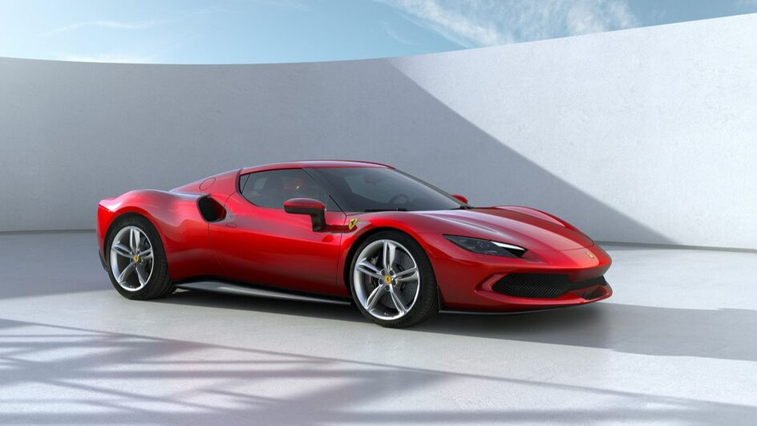

BLOG SUPERCARROS
Confira as últimas noticias

A frota de automóveis em operação no estado de Santa Catarina é de 3,3 milhões de veículos, conforme dados do Departamento Estadual de Trânsito (Detran). Desses, 292,8 mil rodam pelas ruas de Joinville, o equivalente a 8,8% da frota estadual. E quatro desses automóveis estão no top 10 dos mais caros do Brasil.
A frota de automóveis em operação no estado de Santa Catarina é de 3,3 milhões de veículos, conforme dados do Departamento Estadual de Trânsito (Detran). Desses, 292,8 mil rodam pelas ruas de Joinville, o equivalente a 8,8% da frota estadual. E quatro desses automóveis estão no top 10 dos mais caros do Brasil.
A frota de automóveis em operação no estado de Santa Catarina é de 3,3 milhões de veículos, conforme dados do Departamento Estadual de Trânsito (Detran). Desses, 292,8 mil rodam pelas ruas de Joinville, o equivalente a 8,8% da frota estadual. E quatro desses automóveis estão no top 10 dos mais caros do Brasil.